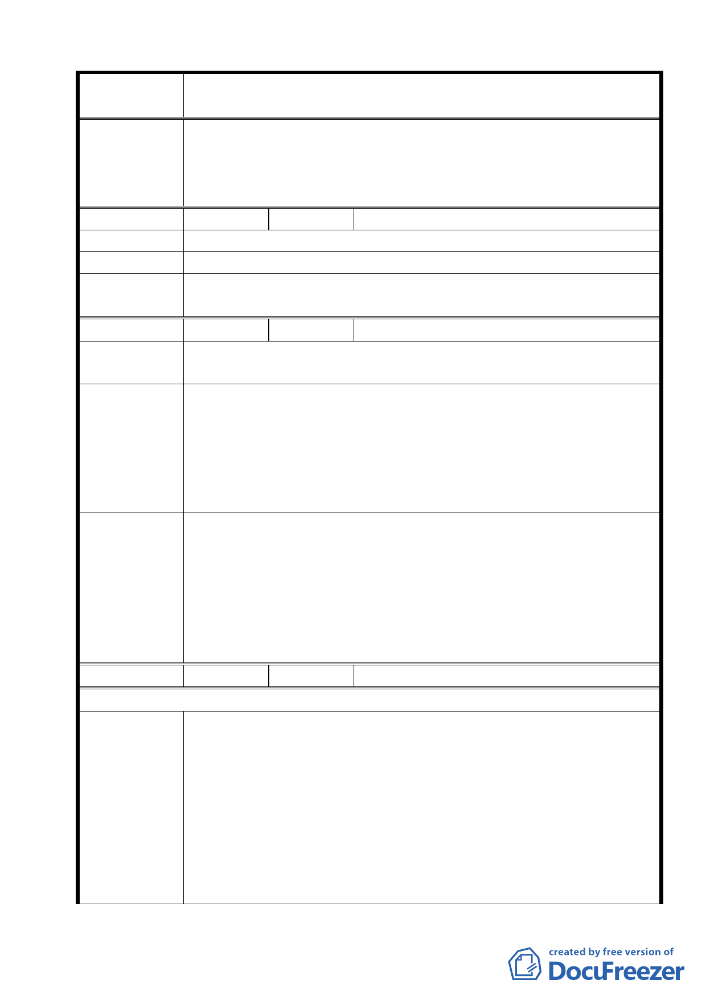

案名
變更臺北市士林區陽明山山仔后地區第二種住宅區為特定住宅區
細部計畫案
2.本案除市府本次會議所送修正計畫書第 2-20 頁（四）文字修正
為「建築基地地面高度設計：建築基地地面設計以維持原地形
地面為原則，但經整地後基地地面高度不得超過 1.2 公尺」外，
其餘依市府本次會議所送修正計畫書內容通過。
編號
4 陳情人 郭文華
陳情理由 不合時代。
建議辦法 保持原狀。
委員會議
決議
同編號 2 決議內容。
編號
5 陳情人 臺北市私立薇閣國小董事長李傳洪
陳情理由
本計畫範圍現存之美軍宿舍，為臺灣絕無僅有具歷史價值之美式
住宅。
1.應好好保護美軍宿舍此一文化資產，留給後代子孫永續珍藏。
2.我們目前承租房舍（凱旋路 53 號），因勤於美化維護，屋況良
建議辦法
好，建請文化局將其列為文化景觀。
3.我們目前承租房舍之周圍區域，現況大樹成林，建議將該區域
（細部計畫街廓編號 R-15-1）變更為綠地，以免破壞好不容易
栽植長成的大樹。
1.有關本項陳情市府業說明 R-15-1 街廓已變更為「特定住宅區
（一）」，並擬定都市設計管制要點進行樹木保護與綠化，另凱
委員會議
決議
旋路 53 號座落區域業經市府公告登錄為文化景觀。
2.本案除市府本次會議所送修正計畫書第 2-20 頁（四）文字修正
為「建築基地地面高度設計：建築基地地面設計以維持原地形
地面為原則，但經整地後基地地面高度不得超過 1.2 公尺」外，
其餘依市府本次會議所送修正計畫書內容通過。
編號
6 陳情人 臺灣銀行
96/7/11 陳情意見
1.本行持有之不動產屬私有財產，本都市計畫變更案應秉持公平
合理原則辦理，以符法制。
（1）查土地法第四條定義之公有土地為國有土地、直轄市有土
陳情理由
地、縣（市）有土地或鄉（鎮、市）有土地。本行持有之不
動產係登記所有權人「臺灣銀行股份有限公司」，非屬公有
土地範疇；次查財政部國有財產局 89 年 1 月 14 日台財產局
接第 8900000466 號函：「臺灣銀行行產屬私法人財產，與國
有財產無涉」；財政部 95 年 2 月 24 日台財產接字第
0950004989 號函：「臺灣銀行屬公司組織之國營事業，依國
16